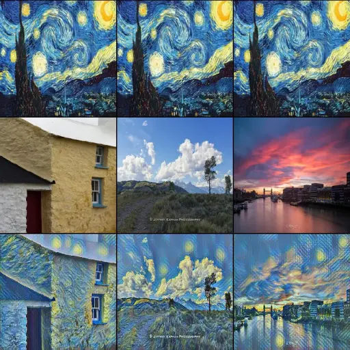
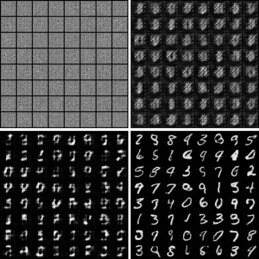
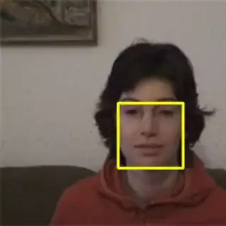
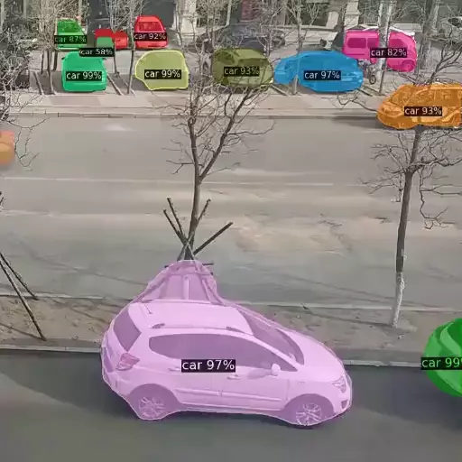

Computer Vision, Deep Learning, Web Techniques计算机视觉，深度学习，Web技术
Email Me 联系我吧 Download CV 下载简历I am currently enrolled in the MPhil program at the School of Computer Science, The University of Sydney, where I am under the guidance of Dr. Tongliang Liu. My research focuses on robust deep learning techniques that can handle imperfect data, such as data corruption, limited supervision, and small datasets. Moreover, I am exploring the applications of these techniques in the field of medical image diagnosis.
My journey began after completing my B.S. degree in Electronic Information Engineering from the Civil Aviation University of China in 2016. I initially started as a software developer and gradually transitioned into the role of an image algorithm engineer. Throughout my career, I have successfully delivered a variety of projects utilizing programming languages such as C/C++, Python, and JavaScript. This experience has helped me develop proficiency in these programming languages as well as gain a strong understanding of software design patterns.
Notably, I have actively contributed to several computer vision projects, including the development of systems for detecting pulmonary nodules, identifying intracranial hemorrhages, and detecting rib fractures, among others. These projects have allowed me to leverage my expertise in computer vision and continually enhance my skills in this exciting field.
我致力于研究计算机视觉和深度学习中的挑战性问题。我的研究兴趣涉及医学影像诊断、图像语义分割、面部识别以及基于视觉的机器人技术。
我于2016年毕业于中国民航大学电子信息工程专业，获得学士学位。毕业后，我先后担任软件开发工程师和图像算法工程师。我用C/C++、Python和JavaScript开发了很多项目，超过50,000行，所以我对这些编程语言和软件设计模式比较熟悉。我擅长传统的图像处理算法，如滤波、形态学操作、图像特征检测、几何变换和特征描述等。在深度学习领域，我对各种神经网络模型、损失函数、训练和评估方法都比较了解。我还开发了很多相关的计算机视觉项目，如肺结节检测、颅内出血检测、目标跟踪、三维重建、图像翻译和对抗生成网络等。
10/2022 - 09/2023 (expected)
The University of Sydney悉尼大学
09/2012 - 06/2016
Civil Aviation University of China中国民航大学
Major GPA: 3.70/4.0 主修绩点: 3.7/4.0
Linear Algebra: 97/100 线性代数: 97/100
Advanced Mathematics: 94/100 高等数学: 94/100
Digital Signal Processing: 93/100 数字信号处理: 93/100
C Programming Language: 92/100 C语言程序设计: 92/100
First-class Scholarship - Ranking: 5% 人民一等奖学金 - 排名: 5%
Rockwell Collins Scholarship - Ranking: 1/169 天津市人民政府奖学金 - 排名: 1/169
Tianjin Government Scholarship - Ranking: 1/169 罗克韦尔.科林斯奖学金 - 排名: 1/169
Second Prize of Beidou Cup China Contest - National 天津市挑战杯比赛三等奖 - 省部级
Third Prize of Challenge Cup Tianjin Contest - Provincial 北斗杯全国科技创新大赛二等奖 - 国家级
07/2021 - 09/2022
07/2021 - 09/2022
Involved in developing a clinical detection system for Intracranial Hemorrhage (ICH) based on deep learning technology, which could automatically process images and assess them for hemorrhage within minutes. Trained with thousands of non-contrast CT (NCCT) scans from several hospitals, the system could identify all types of suspected hemorrhage, including intraparenchymal (IPH), intraventricular (IVH), subdural (SDH), epidural (EDH) and subarachnoid (SAH), with a sensitivity of 96%, specificity of 94% and segmentation Dice coefficient of 88%. In clinical practice, it could really help doctors streamline decision-making and expedite patient care.
08/2019 - 06/2021
Developed a clinically applicable automatic deep learning system for rib fractures detection from CT scans, which achieved a high sensitivity of 92.9% with an average of 5.27 false positives per scan and reduced approximate 86% clinical time consuming. A paper was published in EBioMedicine (by The Lancet). A subset of the dataset was open-source to research community, which was the first open large-scale dataset in this application, and we successfully hosted MICCAI 2020 RibFrac Challenge.
Developed a solution of 2D+1D CNN in Kaggle competition of RSNA Intracranial Hemorrhage Detection, which ranked top 8% among more than 1345 teams in 75 countries.
开发了临床适用的自动深度学习系统，用于从CT扫描中进行肋骨骨折的检测。该系统在平均每个扫描有5.27个假阳的情况下，敏感度高达92.9％，并减少了约86％的临床时间，相关论文发表在EBioMedicine (柳叶刀)上。数据集已向研究社区开源，这是此类研究领域中的第一个开放式大规模数据集，并且成功举办了MICCAI 2020 RibFrac Challenge。
在Kaggle举办的RSNA颅内出血检测比赛中，融合切片的不同的窗宽窗位信息以及结合了切片间的空间信息，设计了2D CNN + 1D CNN的方案，获得铜牌，排名Top 8%。
04/2017 - 07/2019
Involved in developing Pulmonary Nodule Detection system named Argus, responsible for designing false positive reduction model. Due to the limited size of the segmentation model structure and insufficient random negative samples, the morphological differences between the false detection areas and nodules couldn't be fully learned by the segmentation model. Therefore, I designed multimodal fusion to reduce misdiagnosis rate. Finally, the system achieved a high detection sensitivity of 96% with an average 5 false positives per case.
Involved in developing SAP core web framework SAPUI5 by JavaScript, CSS and HTML5, responsible for designing crucial Gantt Chart control as core developer.
参与SAP肺结节检测系统Argus的研发, 主要负责降假阳网络的设计。因为分割网络的输入大小受限于GPU内存，并且在训练的过程中随机摘取的负样本并不充分，所以分割网络无法充分学习到肺结节区域和假阳区域的形态差异。因此，我设计了多模型融合的方法以降低误诊率。最终，该系统在平均每个扫描有5个假阳的情况下，敏感度高达96%。
参与SAP核心前端框架SAPUI5的设计，主要负责用JavaScript、CSS和HTML5等Web技术，开发用于项目管理的Gantt Chart控件。
07/2016 - 03/2017
Involved in developing the Cockpit Flight Instrument display system by C/C++ for Boeing company, which was used to display various flight parameters of aircraft graphically.
用C/C++等技术参与开发Cockpit Flight Instrument系统，该系统主要用于图形化显示各种飞行参数，比如飞行速度，海拔高度和飞行姿态等。
PADDLES: Phase-Amplitude Spectrum Disentangled Early Stopping for Learning with Noisy Labels
Huaxi Huang, Hui Kang, Sheng Liu, Olivier Salvado, Thierry Rakotoarivelo, Dadong Wang, Tongliang Liu, Preprint 2023
Deep-Learning-Assisted Detection and Segmentation of Rib Fractures from CT Scans: Development and Validation of FracNet
Liang Jin, Jiancheng Yang, et al, Hui Kang, Jiajun Chen, Ming Li, EBioMedicine (by The Lancet) 2020
3D-Object Modeling with Kinect in Indoor Condition
Hui Kang, Chen Chen, Wenbo Hu, Ke Wu, Xiaoya Jin, Civil Aviation Science and Education Research 2015
|  |  |
|  |  |
Extracted the bone areas through a series of morphological operations (e.g., thresholding and filtering) to speed up the detection. The intensity of input voxels was clipped to the bone window (level=450, width=1100) and normalized to [-1,1].
Developed FracNet to perform segmentation in a sliding window fashion. Used a balanced sampling strategy, applied data augmentation and combined soft Dice loss and BCE loss to alleviate the imbalance between positive and negative samples.
Applied Radial Basis Function (RBF) to sliding window inference, so as to reduce the weights of the predictions near the edges of sliding window and get more accurate pixel level predictions, which increased sensitivity by 1.1%. Binarized the post-processed segmentation results and then computed connected components.
通过一系列形态学操作（例如，阈值化和滤波）提取骨骼区域，以加快检测速度。输入体素的强度被裁剪到骨骼窗口（窗位=450，窗宽=1100）并归一化为[-1,1]。
基于3D UNet设计了FracNet，以滑动窗口的方式进行分割。使用合理的采样策略，应用随机旋转、偏移、翻转和噪声等数据增广方式，结合soft Dice loss和binary cross-entropy (BCE) loss作为损失函数来减轻正负样本之间的不平衡。
将径向基函数（RBF）应用到滑动窗口推理中，以减小滑动窗口边缘附近的预测值的权重，从而获得了准确的像素级别预测，并将敏感度进一步提高了1.1％。随后进行二值化和连通域计算等操作以进行指标评估。
The intracranial hemorrhage dataset contains many patients, each of which in turn contains multiple slices of varying numbers. Therefore, we designed a two-stage detection system to fully utilize the characteristics of the data.
Combined the brain window (40, 80), subdural window (80, 200) and bone window (600, 2800) to form a 3-channel fused feature map for extracting features of different brain tissues. Then applied these features for transfer learning to train a strong feature extraction model.
Extracted extractor's Global Average Pooling (GAP) layer features from adjacent slices in each patient's CT scans and combined all the features as a grouped feature. Finally, used all grouped features to train a classification model.
颅内出血数据集中包含多个病人，每个病人又包含数目不同的多个切片。因此，我们设计了两阶段检测系统来充分地利用数据的特点。
第一阶段，由于不同组织具有不同CT值，将脑窗(40, 80)、硬膜下窗(80, 200)、骨窗(600, 2800)组合形成3通道融合特征图，对于提取颅内不同部分的特征非常重要。多样性数据增广来解决类别不平衡问题，然后将这些特征送入分类网络进行迁移学习，使之成为较强的特征提取器。
第二阶段，将病灶的前后几帧分别送入特征提取器，提取GAP层的特征并利用1D CNN等再进行融合，从而结合了多个切片间的空间信息，使得总体分类结果更加精确。
Developed a 3D CNN segmentation model by combining ASPP, ResNet and UNet to detect mutiscale pulmonary nodules with more accurate prediction positions.
Developed 3 different 3D CNN classification models (ResNet, DenseNet, SENet) and trained respectively with hard negative mining to reduce false positives of the segmentation model.
Used Linear Regression (LR) to fuse the features learned by the models mentioned above to further reduce misdiagnosis rate of the segmentation model, which reduced false positives from 146.5 per scan to 5 per scan.
由于肺结节在大小、形态和类型上存在较大差异，因此基于3D UNet并结合ASPP、ResNet等，来分割出多尺度、多模态的肺结节。
在上一步推荐的可疑肺结节中不可避免地会存在较多假阳性结果，因此需要假阳性肺结节抑制算法来提高检测精度。利用已有的标注数据并结合难例挖掘，分别训练3种不同的肺结节分类模型（例如，ResNet、DenseNet和SENet）。
由于不同的分类模型可能会侧重地学习到肺结节的某一些特征，因此利用线性回归等操作来进一步融合模型，从而得到更准确的分类结果。最终，把分割模型的平均FPs (146.5)大幅减少到了FPs (5)。

Divided the area of each sliding window into small connected regions called cells, calculated each cell's color histogram and combined all color histograms as a group called block color histogram, like the histogram of oriented gradients (HOG) algorithm, which has a strong local feature representation capability.
Used sliding window method to traverse the image and obtain all block color histograms. Finally, compared the similarity between adjacent images' all block color histograms to get the confidence map, then applied the MeanShift algorithm to iterate on the confidence map.
借鉴方向梯度直方图（HOG）的思想，将普通颜色直方图改进为分块颜色直方图。分块颜色直方图由于将目标区域划分成了数个局部区域，因此具有较强的局部特征表达能力。
使用滑动窗口方法遍历图像并获得当前帧的分块颜色直方图特征与HOG特征，并进行融合。将当前帧的融合特征与上一帧的进行匹配，以获得置信度图。置信图实质上为概率密度图，它代表了目标区域的特征在一幅新图像中存在的概率。最后，利用MeanShift算法在置信图中迭代，从而找到该帧图像的目标区域。
Calibrated the Kinect color camera to obtain the camera's internal parameter matrix and aligned the depth camera with the color camera.
Created an inter-frame filtering algorithm based on joint bilateral filtering and used the filtering algorithm to fix depth images.
Obtained the point clouds through Point Cloud Library (PCL), used the Iterative Closest Point (ICP) algorithm to align all point clouds to the same coordinate system.
首先对Kinect进行标定，获取内参数矩阵，从而将深度摄像头与彩色摄像头对齐到同一坐标系下。
由于深度摄像头不可避免地容易受到光线、距离等因素的干扰，会丢失掉很多信息。于是我设计了一种新的帧间滤波算法，利用连续多帧图像之间的相关性，对原始深度图像进行修复。
通过PCL将彩色图像和深度图像结合，从而获取点云。利用ICP算法将多角度下拍摄的点云统一到相同坐标系下，完成点云精确配准，从而得到物体的3D模型。
Languages: Chinese, English
Operating Systems: Unix/Linux, Windows
Programming Languages: Python, C/C++, JavaScript, HTML5, CSS
Development Tools: Numpy, Pandas, Scikit-Learn, Scikit-Image, OpenCV, PyTorch